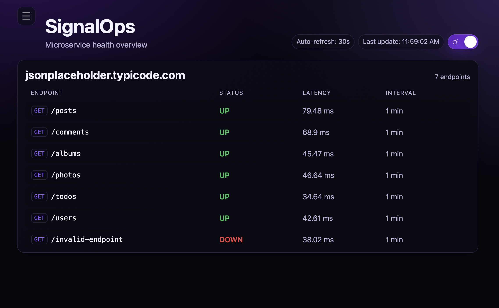
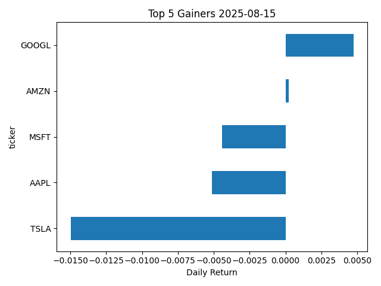

ND
Experience
Projects
Publications
Contact
Gallery
Projects

SignalOps: Real-time system signals, intelligent insights
GlobaLens: See Beyond the Headlines
WanderBot - Your AI-powered Trip Planning Agent

Stock Data ETL with Automated Scheduling and Reporting
EchoLens: Empowering Digital Accessibility
×
View Source Code:
GitHub Link